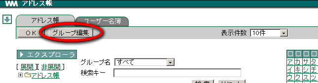
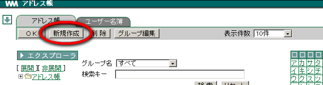
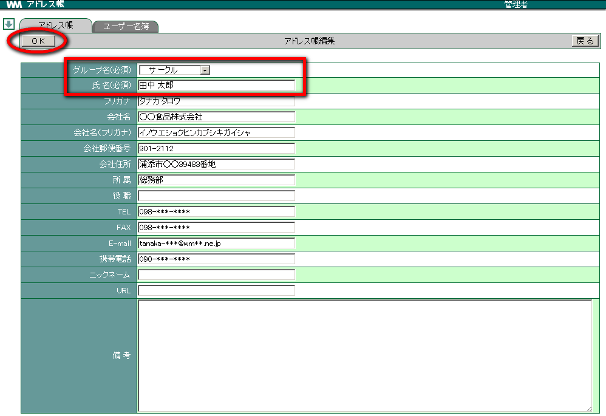
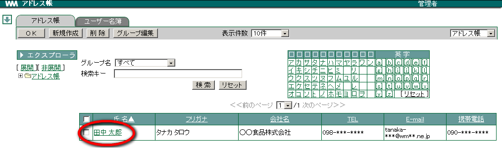
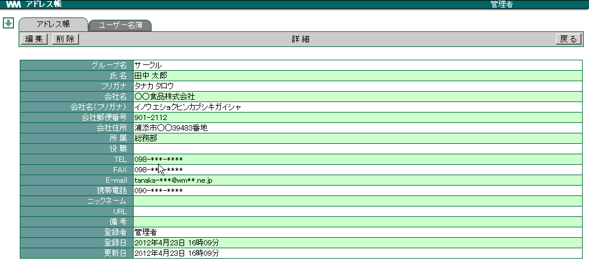
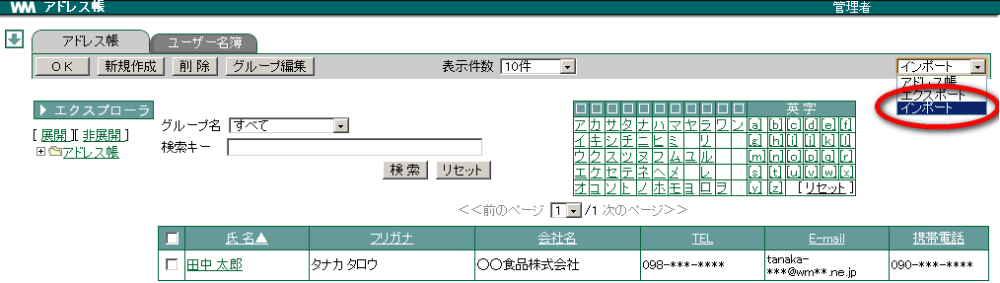
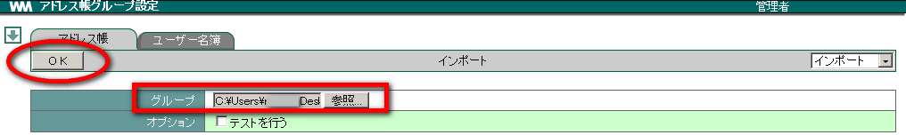
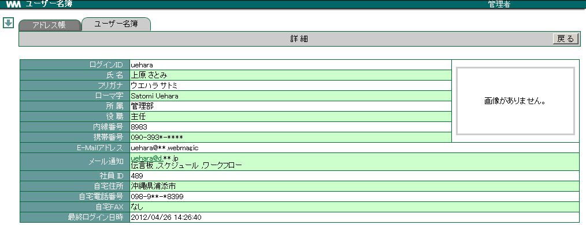

3. アドレス帳¶
アドレス帳には
- アドレス帳(個人的なユーザーを登録)
- ユーザー名簿(WebMagic へログオンできるユーザー一覧)
の2つの機能があります。
3.1. アドレス帳¶
3.1.1. グループを登録する¶
メニューの
 をクリックします。
をクリックします。[アドレス帳] を選択し、 グループ編集 をクリックします。

新規作成 をクリックします。
分類を選択し、グループ名を入力して OK をクリックします。


3.1.3. ユーザを登録する¶
アドレス帳にユーザを登録しましょう。
メニューの
をクリックします。[アドレス帳] を選択します。
グループを作成すると 新規作成 ボタンが表示されますのでクリックします。

グループ名を選択し、各項目を入力して OK をクリックします。 [1] [2]

Warning
グループ名、氏名は必須項目です。
3.1.4. ユーザの詳細情報を確認する¶
メニューの
をクリックします。[アドレス帳] を選択し、詳細を確認したいユーザー名をクリックします。

クリックしたユーザの詳細情報を表示されます。

戻る をクリックします。


3.1.6. インポート・エクスポート¶
3.1.6.1. CSV ファイルへ書き出す(エクスポート)¶


3.1.6.2. CSV ファイルを取り込む(インポート)¶
メニューの
をクリックします。右端プルダウンメニューより インポート を選択します。

参照 をクリック、取り込む CSV ファイルを指定し OK をクリックします。

CSV ファイル名とインポート実行結果が別ウィンドウで表示されます。 [6]
3.1.6.2.1. CSV ファイルの書き方¶
CSV ファイルにアドレス帳データを登録する場合は、一度エクスポートを実行して保存されたエクスポートファイル(address_export.csv)をご参照ください。
| インポートに必要なヘッダーの説明 | 必須 | ||
|---|---|---|---|
| schema | 操作 | 「public」・・・共有
「person」・・・個人
|
✔ |
| group_name | グループ名 | ✔ | |
| name | 氏名 | ✔ | |
| kana | フリガナ | ||
| e_mail | |||
| nickname | ニックネーム | ||
| company | 会社名 | ||
| company_kana | 会社名(フリガナ) | ||
| company_zip | 会社郵便番号 | ||
| company_addres | 会社住所 | ||
| department | 所属 | ||
| post | 役職 | ||
| tel | TEL | ||
| fax | FAX | ||
| cellular_phone | 携帯電話 | ||
| url | URL | ||
| note | 備考 |


3.2. ユーザー名簿¶
WebMagic を利用できるユーザーが登録されています。検索機能を使うと速やかにユーザーを探し出すことができます。 [9]
3.2.1. ユーザーの詳細情報を確認する¶
メニューの
をクリックします。[ユーザー名簿] をクリックします。
ユーザーの 氏名 または フリガナ をクリックします。 [10]

ユーザーの詳細画面が表示されます。

Warning
設定により画像の欄が表示されないことがあります。設定は管理者が登録・変更できます。
脚注
| [1] | E-Mailを登録しておくと、メールを作成する際に便利です。 |
| [2] | フリガナを入力しておくと、五十音の頭文字検索で抽出でき便利です。 |
| [3] | 個人グループ は [設定画面] の [グループ] で登録しておく必要があります。登録方法等は [設定画面] をご確認ください。 |
| [4] | 初期値でのファイル名は address_export.csv です。 |
| [5] | [オプション] の [ヘッダ文字を日本語にする] にチェックをつけてOKボタンをクリックすると、CSVファイルのヘッダが日本語表示されたファイルが作成されます。(ヘッダが日本語表示されたファイルはインポートには利用できません) |
| [6] | [オプション] の [テストを行う] にチェックをつけて OK ボタンをクリックすると、CSVファイルのテストを行うことができます。(チェックがつけられている場合は、データ登録はされません) |
| [7] | 50音表の上にある□をクリックすると、選択した行毎にユーザーを検索することができます。 |
| [8] | 「グループ名」での検索の場合はリセットできません。プルダウンメニューから すべて を選択します。 |
| [9] | ユーザー登録は WebMagic 管理者が行います。 |
| [10] | E-Mail をクリックすると、新規メール編集画面が表示され、宛先に選択したユーザーのメールアドレスが挿入されます。 |